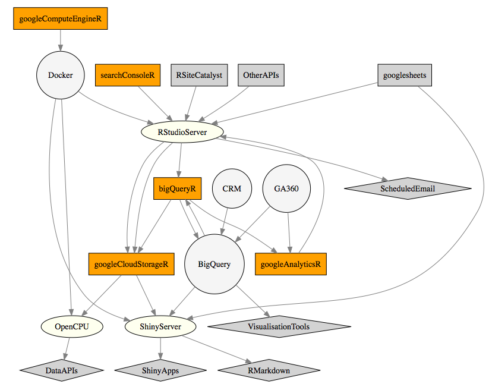
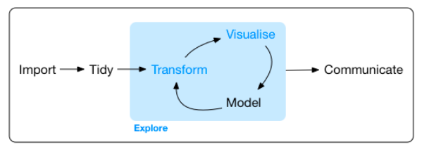
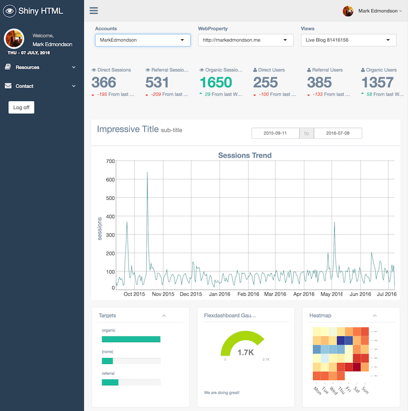

There are now several packages built upon the googleAuthR framework which are helpful to a digital analyst who uses R, so this post looks to demonstrate how they all work together. If you’re new to R, and would like to know how it helps with your digital analytics, Tim Wilson and I ran a workshop last month aimed at getting a digital analyst up and running. The course material is online at www.dartistics.com.
Diagram
A top level overview is shown below:

The diagram shows googleAuthR packages, other packages, servers and APIs all of which interact to turn data into actionable analytics.
The most recent addition is googleComputeEngineR which has helped make great savings in the time it takes to set up servers. I have in the past blogged about setting up R servers in the Google Cloud, but it was still more dev-ops than I really wanted to be doing. Now, I can do setups similar to those I have written about in a couple of lines of R.
Data workflow
A suggested workflow for working with data is:
- Infrastructure - Creating a computer to run your analysis. This can be either your own laptop, or a server in the cloud.
- Collection - Downloading your raw data from one or multiple sources, such as APIs or your CRM database.
- Transformation - Turning your raw data into useful information via ETL, modelling or statistics.
- Storage - Storing the information you have created so that it can be automatically updated and used.
- Output - Displaying or using the information into an end user application.
The components of the diagram can be combined into the workflow above. You can swap out various bits for your own needs, but its possible to use R for all of these steps.
You could do all of this with an Excel workbook on your laptop. However, as data analysis becomes more complicated, it makes sense to start breaking out the components into more specialised tools, since Excel will start to strain when you increase the data volume or want reproducibility.
Infrastructure
googleComputeEngineR uses the Google Clouds’ virtual machine instances to create servers, with specific support for R.
It uses Docker containers to make launching the servers and applications you need quick and simple, without you needing to know too much dev-ops to get started.
Due to Docker, the applications created can be more easily transferred into other IT environments, such as within internal client intranets or AWS.
To help with a digital analytics workflow, googleComputeEngineR includes templates for the below:
- RStudio Server - an R IDE you can work with from your browser. The server edition means you can access it from anywhere, and can always ensure the correct packages are installed.
- Shiny - A server to run your Shiny apps that display your data in dashboards or applications end users can work with.
- OpenCPU - A server that turns your R code into a JSON API. Used for turning R output into a format web development teams can use straight within a website.
For instance, launching an RStudio server is as simple as:
library(googleComputeEngineR)
vm <- gce_vm_template("rstudio",
name = "rstudio-server",
predefined_type = "f1-micro",
username = "mark",
password = "mark1234")
The instance will launch within a few minutes and give you a URL you can then login with.
Collection
Once you are logged in to your RStudio Server, you can use all of R’s power to download and work with your data.
The googleAuthR packages can all be authenticated under the same OAuth2 token, to simplify access.
Other packages useful to digital analytics include APIs such as RSiteCatalyst and twitteR. A full list of digital analytics R packages can be found in the web technologies section of CRAN Task Views.
Another option is the R package googlesheets by Jenny Bryan, which could either be used as a data source or as a data storage for reports, to be processed onwards later.
The below example R script fetches data from Google Analytics, SEO data from Google Search Console and CRM data from BigQuery.
library(googleAnalyticsR)
library(searchConsoleR)
library(bigQueryR)
library(googleAuthR)
## authenticate with all services
gar_auth_service("auth.json")
## get search console data
seo_data <- search_analytics("http://example.com",
"2015-07-01", "2015-07-31",
c("date", "query", "page"))
## get google analytics data
ga_data <- google_analytics_4(1235678,
c("2015-07-01", "2015-07-31"),
metrics = c("users"),
dimensions = c("date", "userID" , "landingPagePath", "campaign"))
## get CRM data from BigQuery
crm_data <- bqr_query("big-query-database", "my_data",
"SELECT userID, lifetimeValue FROM [my_dataset]")
Transformation
This ground is well covered by existing R packages. My suggestion here is to embrace the tidyverse and use that to create and generate your information.
Applications include anomaly detection, measurement of causal effect, clustering and forecasting. Hadley Wickham’s book “R for Data Science” is a recent compendium of knowledge on this topic, which includes this suggested work flow:

Storage
Once you have your data in the format you want, you often need to keep it somewhere it is easily accessible for other systems.
Google Cloud Storage is a cheap, reliable method of storing any type of data object so that its always available for further use, and is heavily used within Google Cloud applications as a central data store. I use it for storing RData files or storing csv files with a public link that is emailed to users when available. It is accessible in R via the googleCloudStorageR package.
For database style access, BigQuery can be queried from many data services, including data visualisation platforms such as Google’s Data Studio or Tableau. BigQuery offers incredibly fast analytical queries for TBs of data, accessible via the bigQueryR package.
An example of uploading data is below - again only one authentication is needed.
library(googleCloudStorageR)
library(bigQueryR)
## authenticate with all services
gar_auth_service("auth.json")
## upload to Big Query
bqr_upload_data("projectID", "datasetID", "tableID",
my_data_for_sql_queries)
## upload to Google Cloud Storage
gcs_upload("my_rdata_file")
Output
Finally, outputs include Shiny apps, RMarkdown, a scheduled email or an R API call using OpenCPU.
All googleAuthR functions are Shiny and RMarkdown compatible for user authentication - this means a user can login themselves and access their own data whilst using the logic of your app to gain insight, without you needing access to their data at all. An example of an RMarkdown app taking advantage of this is the demo of the GentelellaShiny GA dashboard

You can launch OpenCPU and Shiny servers just as easily as RStudio Server via googleComputeEngineR:
library(googleComputeEngineR)
## creates a Shiny server
vm2 <- gce_vm_template("shiny",
name = "shiny-server",
predefined_type = "f1-micro",
username = "mark",
password = "mark1234")
## creates an OpenCPU server
vm3 <- gce_vm_template("opencpu",
name = "opencpu-server",
predefined_type = "f1-micro",
username = "mark",
password = "mark1234")
Shiny Apps or RMarkdown HTML files can then be uploaded for display to the end user. If the server needs more power, simply save the container and relaunch with a bigger RAM or CPU.
OpenCPU is the technology demonstrated in my recent EARL London talk on using R to forecast HTML prefetching and deploying through Google Tag Manager.
Your Shiny, RMarkdown or OpenCPU functions can download data via:
library(googleCloudStorageR)
library(bigQueryR)
## authenticate with all services
gar_auth_service("auth.json")
## download Google Cloud Storage
my_data <- gce_get_object("my_rdata_file")
## query data from Big Query dependent on user input
query <- bqr_query("big-query-database", "my_data",
"SELECT userID, lifetimeValue FROM [my_dataset]")
Summary
Hopefully this has shown where some efficiencies could be made in your own digital analysis. For me, the reduction of computer servers to atoms of work has expanded the horizons on what is possible: applications such as sending big calculations to the cloud if taking too long locally; being able to send clients entire clusters of computers with a data application ready and working; and having customised R environments for every occasion, such as R workshops.
For the future, I hope to introduce Spark clusters via Google Dataproc, giving the ability to use machine learning directly on a dataset without needing to download locally; scheduled scripts that launch servers as needed; and working with Google’s newly launched machine learning APIs that dovetail into the Google Cloud.